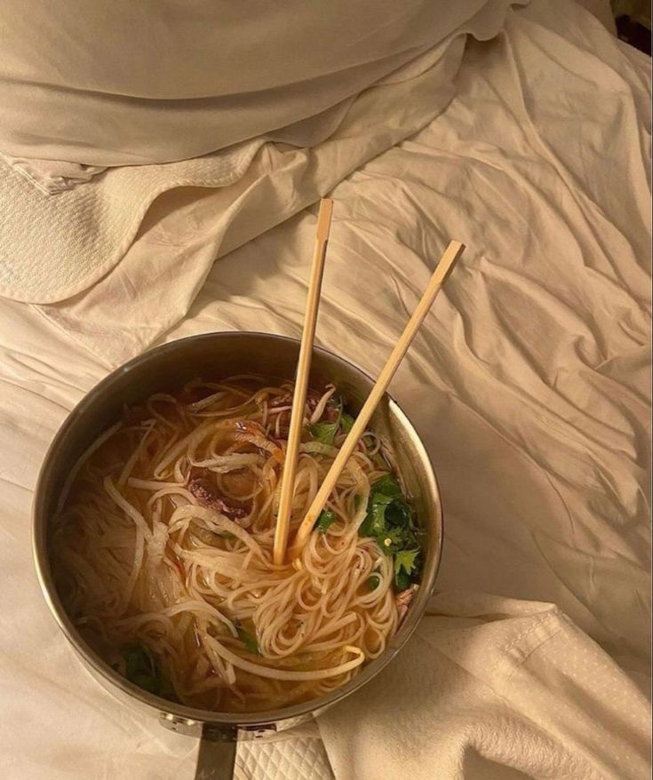

CLEANSHELF RENDEZVOUS

Description
So everyone really made these differently but we all agreed that we really loved indomie even though a lot of people hate it.Theres a type of intimacy that comes liking the same things especially when a lot of people seem to hate said thing.Anyway i likemy noodles super soggy but with a little chilli.He loves the chilli haha.
Ingredients
- 4 hot dog wieners
- 4 hot dog or sausage buns
- 1 cup tomato pizza sauce
- 1 cup sautéed onions, mushrooms and peppers
- ½ cup sliced green olives
- 1 cup shredded mozzarella cheese
- 2 tablespoons flat-leaf parsley, chopped, for garnish
Steps
- Prepare the hot dogs: Preheat grill to 500°F. Using a pairing knife, cut small 45° slits along the length of the wieners, marking every half-inch and going about halfway deep. Transfer the wieners onto the hot grill and cook for about 5 minutes, turning occasionally to ensure they’re uniformly cooked. Use wieners in one or more of the following ways
- Open buns on work surface. Add a helping of pizza sauce onto each, spreading it across. Place one cooked wiener onto each bun. Sprinkle a small handful of olives on one side of hot dog. Add some of the sautéed vegetables across the other. Sprinkle with cheese. Place prepared hot dogs into an oven-safe casserole or rectangular baking pan. Transfer to preheated 250°F oven and bake for 10-15 minutes or until cheese has melted and bun is toasted. Garnish with chopped parsley. Serve immediately.
Return to main page